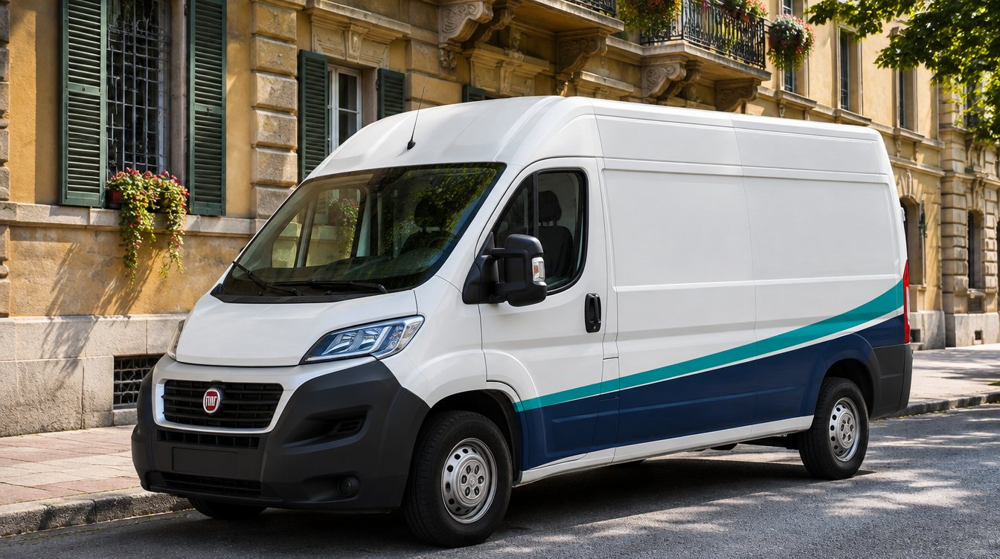

Euroclean
PRIMADOPOScale condominiali, in centro2 operatori · 3 ore · ogni 15 giorni

Identità visiva · social · pubblicità
Ciao Jonatan,
questo documento è tuo: tienilo, rileggilo, fallo vedere a chi lavora con te. Dentro c'è come si presenterà la tua impresa: il logo, i colori, come appare su Instagram e Facebook, che storie e che video pubblicare, e come far arrivare clienti nuovi con la pubblicità.
Non partiamo da zero. Hai una cosa che nessuna ditta nuova può comprare: anni di lavoro della tua famiglia, clienti che si fidano, un nome che in zona qualcuno già conosce. Il nostro lavoro è far vedere tutto questo a chi ancora non ti conosce, e renderlo facile da scegliere.
Ogni scelta qui dentro ha un solo scopo: che chi ti trova su Google o su Instagram pensi “questi sono seri, gli scrivo”.
 Alexander Fania
Alexander Fania Federico Delfino
Federico Delfino02 — Come si trovano i clienti
Abbiamo studiato come lavorano le imprese di pulizie che crescono. Il cliente non sceglie chi pulisce meglio: non può saperlo prima. Sceglie chi gli dà più prove che lavorerà bene, che sarà puntuale e che non darà problemi. Tutto il marchio è costruito su questo.
Aziende, uffici, condomini. Decidono l'amministratore o il titolare. Vogliono un contratto chiaro, fattura, assicurazione, sempre le stesse persone. Valgono di più: un ufficio pulito due sere a settimana è un cliente per anni.
Famiglie e privati. Decidono in fretta, spesso la sera dal telefono. Vogliono vedere facce, prezzi chiari e recensioni. Portano lavori veloci e passaparola.
È il contenuto che funziona di più nel settore. Una foto vale più di qualsiasi slogan: si vede il risultato senza doverlo spiegare.
Chi entra in casa o in ufficio deve avere un nome e un volto. “Ditta di famiglia dal…” è una garanzia che le ditte nuove non possono scrivere.
Le stelle su Google decidono chi compare per primo. Ogni lavoro finito bene diventa una richiesta di recensione, lo stesso giorno.
Post, storie, Google, furgone, biglietto: ovunque c'è lo stesso numero e lo stesso invito, “preventivo gratuito in 24 ore”. Chi deve cercare come contattarti, non ti contatta. Chi scrive deve ricevere risposta entro pochi minuti: per questo ti prepariamo anche le risposte già scritte.
03 — Il nome
Il nome è l'unica cosa che dopo non si cambia più: finisce sul furgone, sulle divise, su Google e sui contratti. Per questo lo decidiamo con dei criteri, non a sensazione. Hai tre strade, tutte valide.
Continuità totale: i clienti di tua madre lo riconoscono subito, non c'è niente da spiegare.
Si tiene la parola e si aggiunge la città, il cognome o l'anno: “Euroclean + città” oppure “Euroclean dal …”. I clienti storici lo riconoscono, Google ti mostra a chi cerca in zona e il nome sui social si libera.
Un marchio tutto tuo, corto e libero ovunque. Per il primo anno scriviamo “ex Euroclean” nella descrizione, così nessuno si perde.
Nitido · pulito e preciso, il nostro preferito
Lindo · caldo, da famiglie
Splendo · moderno, da vetri e sanificazione
Netta · elegante, un omaggio a tua madre
Abbiamo uno strumento che mette il nome che scegli dentro tutti i loghi, i post e il furgone in un secondo. Così non scegli una parola su un foglio: scegli come appare davvero.
04 — Il logo
Il logo è il primo segno che il cliente vede: nel cerchietto di Instagram, sulla scheda di Google, sulla fiancata del furgone. Deve essere semplice, leggibile anche piccolissimo e raccontare cosa fai in un colpo d'occhio.
Acqua, igiene, freschezza: il simbolo più immediato del mestiere, disegnato in modo geometrico e serio, non da cartone animato.
Lavoro fatto e controllato. È la sensazione del cliente quando rientra e trova tutto in ordine: la promessa del marchio.
Grassetto e moderno, con “impresa di pulizie” spaziato sotto: serio per un amministratore, rassicurante per una famiglia.
Il “brilla” dei vetri puliti. Più elegante, adatto a hotel, studi e uffici di rappresentanza.
L'iniziale con il colpo di panno. Il più forte da lontano: perfetto per furgone e divise.
Cosa sono queste proposte. Sono studi di direzione per scegliere la strada insieme. Una volta deciso nome e direzione, disegniamo il logo definitivo con tutte le versioni: orizzontale, solo simbolo, chiaro, scuro, per la stampa e per il ricamo.
05 — Colori e caratteri
Pochi colori, usati sempre allo stesso modo dal furgone alle storie. Così anche scorrendo veloce su Instagram, un tuo post si riconosce prima ancora di leggerlo.
Nelle pulizie quasi tutti usano un azzurro chiaro e anonimo. Noi usiamo un blu profondo, che dice “azienda seria, contratto, fattura”, e un'acqua viva solo per l'azione. Sembri pulito come tutti, ma ti distingui da tutti.
60% chiaro di sfondo, 30% blu per titoli e fasce, 10% acqua solo per i bottoni. Se l'acqua è ovunque, il bottone non si vede più.
Moderno e geometrico: si riconosce senza strafare. Lo usiamo per titoli dei post, nome e numeri grandi.
Il carattere più leggibile da telefono. Entrambi sono gratuiti e già su Canva: puoi usarli anche tu.
06 — Il profilo social
Chi arriva sul tuo profilo decide in pochi secondi se scriverti. Deve vedere subito cosa fai, dove, e come contattarti. La griglia dei post è la tua vetrina: ordinata, con i tuoi colori e tanti risultati veri.
I cerchietti sotto la descrizione restano sempre lì. Sono le risposte alle domande che il cliente si fa: lavorano bene? (prima/dopo), cosa fanno? (servizi), sono affidabili? (recensioni), chi sono? (team), quanto costa? (preventivo).
Stesso logo, stessi post, stessa descrizione. Su Facebook ci sono amministratori di condominio, negozianti e famiglie over 40: è il canale che porta più contratti. In più ci sono i gruppi della città, dove un bel prima/dopo fa il giro del quartiere.
07 — Le storie
Le storie durano 24 ore e si fanno in un attimo, direttamente dal cantiere. Sono perfette per chi lavora tutto il giorno: non serve essere bravi, serve essere costanti. Ognuna finisce con un solo invito: scrivici.
Una foto o 5 secondi di video dal posto, con dove e a che ora. Fa vedere che lavorate davvero, ogni giorno, in posti che la gente conosce.
Il formato che porta più messaggi nel settore. Stesso punto, luce accesa, adesivo con cosa e quanto tempo. La prova, senza parole.
Una domanda che il cliente si fa già, e la risposta facile. Una volta a settimana, cambiando servizio: ufficio, condominio, casa.
Ogni recensione nuova su Google diventa una storia il giorno dopo, e finisce nel cerchietto “Recensioni”.
Il ritmo giusto: una storia “oggi siamo qui” ogni giorno di lavoro, un prima/dopo e un preventivo ogni settimana, una storia per ogni recensione nuova. Una domanda con il sondaggio (“cosa odi di più pulire?”) ogni tanto fa interagire e fa vedere le altre storie a più persone.
08 — I post
I post restano nel profilo e costruiscono la vetrina. Alterniamo risultati veri (prima/dopo, team al lavoro) e grafiche semplici con i tuoi colori (servizi, consigli, recensioni). Tre a settimana bastano.
Il più forte. Nel testo: dove, quanto tempo, ogni quanto. E il numero WhatsApp.
Una persona del team in divisa, nel posto vero. Vende il risultato: “domattina è tutto in ordine”.
Il post che crea più fiducia: la tua faccia e la tua storia. Si fissa in cima al profilo.
Ristoranti, bar e negozi: clienti che pagano bene e hanno bisogno di pulizie frequenti.
Un carosello con trucchi veri. Si salva e si condivide: ti fa conoscere da chi non ti segue ancora.
Puntuali, precisi e gentili. Lo studio non è mai stato così in ordine.Studio dentistico · recensione Google
Parola per parola, con il tipo di cliente. È la voce di un altro che dice che sei bravo.
Ogni post ha sempre il logo piccolo nello stesso angolo, un solo messaggio e il numero WhatsApp nel testo. Mai foto prese da internet con persone finte, “serietà e professionalità” senza prove, o post con solo il logo e gli auguri.
09 — I video
I video verticali brevi (i “reel”) sono l'unico contenuto che Instagram e Facebook mostrano anche a chi non ti segue. Nelle pulizie funzionano benissimo, perché vedere lo sporco sparire è soddisfacente: la gente li guarda fino alla fine. Ne basta uno a settimana.
Telefono fermo su un treppiede da 10 €, registri tutto il lavoro, e in montaggio lo acceleriamo a 15 secondi con musica di tendenza. Zero parole, zero faccia: lo fa chiunque del team.
Tu che parli alla telecamera per 30 secondi: chi era tua madre, perché porti avanti la ditta, cosa prometti ai clienti. Le foto vecchie della ditta in mezzo. È il video da usare anche nella pubblicità.
Un consiglio pratico in 20 secondi: come togliere il calcare, come lavare i vetri senza aloni. La gente lo salva e lo manda agli amici: ti fa conoscere gratis, e chi non ha tempo di farlo da solo ti scrive.
10 — Furgone, divise, biglietti
Il furgone parcheggiato sotto un condominio è un cartellone gratis. La divisa fa capire chi sei appena entri. Il biglietto resta in un cassetto finché serve. Sono le prime cose da marchiare, perché si pagano una volta e lavorano per anni.

Il furgone. Logo grande sulla fiancata, fascia nel blu profondo, numero WhatsApp e “preventivo gratuito” leggibili da 10 metri. Niente elenchi di servizi: da lontano non si leggono.
Biglietto, fronte. Solo il logo e la frase.
Biglietto, retro. Contatti e la promessa.
Polo o felpa blu profondo, simbolo della goccia ricamato sul petto, nome sulla schiena. Pratica, lavabile, sempre uguale per tutto il team. Il cliente apre la porta e sa subito chi è.
11 — La pubblicità
Non accendiamo la pubblicità finché la vetrina non è pronta: logo, profilo, recensioni, risposte su WhatsApp. Altrimenti si pagano contatti che poi si perdono. Questo è l'ordine giusto per un'impresa di pulizie.
Quando qualcuno cerca “impresa di pulizie” in zona, Google mostra prima le 3 schede con la mappa e le stelle. Entrarci non costa: servono la categoria giusta, foto vere, le zone servite e tante recensioni.
Pubblicità mostrata solo alle persone entro tot chilometri da te, con il video prima/dopo o un'offerta. Chi tocca apre WhatsApp con il messaggio già scritto.
Compari quando qualcuno cerca già “pulizie uffici” o “pulizie post cantiere” nella tua città. Pochi contatti ma pronti a firmare, spesso contratti mensili.
| Budget pubblicità al mese | Dove | Contatti WhatsApp stimati | Nuovi clienti stimati |
|---|---|---|---|
| 200 € | Solo Facebook e Instagram, un servizio | 11–28 | 2–6 |
| 400 € | Facebook, Instagram e Google, consigliato per partire | 17–43 | 4–9 |
| 800 € | Entrambi, più servizi, con il sistema già rodato | 34–86 | 7–18 |
Stime sui costi medi del settore nelle città italiane di medie dimensioni. Le verifichiamo insieme dopo le prime 4 settimane, con i numeri veri.
Un ufficio pulito due sere a settimana vale facilmente 250–400 € al mese, per anni. Per questo non misuriamo i “mi piace”: misuriamo quanti ti scrivono, quanti preventivi fai e quanti firmano. Ogni mese ti diciamo quanto ti è costato ogni cliente nuovo.
12 — Il percorso insieme
Ecco cosa facciamo noi, settimana per settimana. Tu ti occupi del lavoro e ci mandi le foto: al resto pensiamo noi, e ti lasciamo tutto pronto per andare avanti anche da solo.
Nome verificato, direzione del logo, colori. Raccogliamo foto, accessi e i contatti dei clienti storici.
Logo definitivo in tutte le versioni. File per furgone, divise e biglietti.
Instagram, Facebook e scheda Google online. Modelli per post e storie, primi post pubblicati.
Prime recensioni, primo video, risposte WhatsApp pronte. Se lo decidi, accendiamo la pubblicità.
Tu ci mandi foto e video su WhatsApp, noi montiamo, scriviamo e pubblichiamo. Tu lavori.
Campagne impostate, controllate ogni settimana e un resoconto mensile semplice: quanto hai speso, quanti clienti sono arrivati.
Una pagina sola con servizi, recensioni e bottone WhatsApp: dove mandiamo chi clicca la pubblicità.
Alexander FaniaFederico Delfino